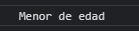

If - Switch - Ternario
1.- Bucle if, condición de sí y no
Usando:
let edadPerson1 = 19;
if (edadPerson1 > 19) {
console.log('Mayor de edad');
} else {
console.log('Menor de edad');
}

2.- Bucle if con varias condiciones
Usando:
let edadPerson2 = 28;
if (edadPerson2 <= 10) {
console.log('Niño');
} else if (edadPerson2 === 18) {
console.log('Adulto');
} else {
console.log('Tercera edad');
}
3.- Operador ternario
Solo una línea de código: verdadero o falso
Usando:
let edadPerson3 = 24;
let mayorEdad = (edadPerson3 >= 18) ? 'Eres mayor de edad' : 'Eres menor de edad';
console.log(mayorEdad);
4.- Switch de opciones
Usando:
let dia = 2;
switch (dia) {
case 1:
console.log('Lunes');
break;
case 2:
console.log('Martes');
break;
default:
console.log('No hay día');
break;
}